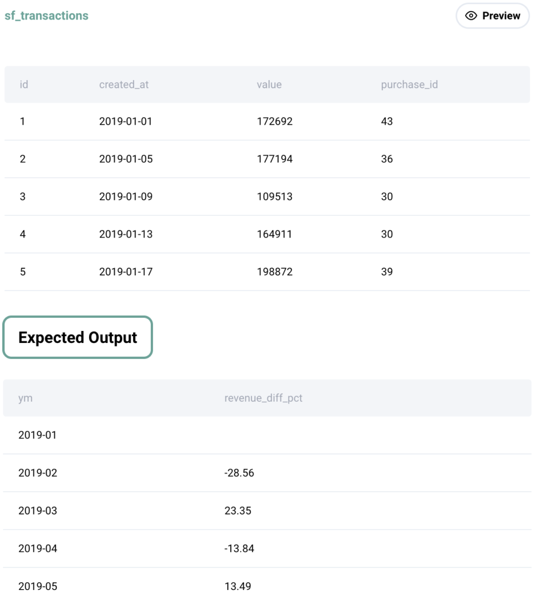

Question sourced from StrataScratch.com.
Database: MySQL
Given a table of purchases by date, calculate the month-over-month percentage change in revenue. The output should include the year-month date (YYYY-MM) and percentage change, rounded to the 2nd decimal point, and sorted from the beginning of the year to the end of the year.
The percentage change column will be populated from the 2nd month forward and can be calculated as ((this month's revenue - last month's revenue) / last month's revenue) * 100.

/*
My strategy: Total the revenue for each month, and use the LAG()
window function to create a column for the previous month's revenue.
Wrap this result table in a CTE, and derive a column for the
month-over-month percentage change.
*/
WITH monthly_revenue AS (
SELECT DATE_FORMAT(created_at, '%Y-%m') AS yr_month,
SUM(value) AS current_month_revenue,
LAG(SUM(value)) OVER(ORDER BY created_at) AS previous_month_revenue
FROM sf_transactions
GROUP BY DATE_FORMAT(created_at, '%Y-%m')
)
SELECT yr_month,
ROUND(
((current_month_revenue - previous_month_revenue) / previous_month_revenue) * 100,
2) AS month_percent_change
FROM monthly_revenue;